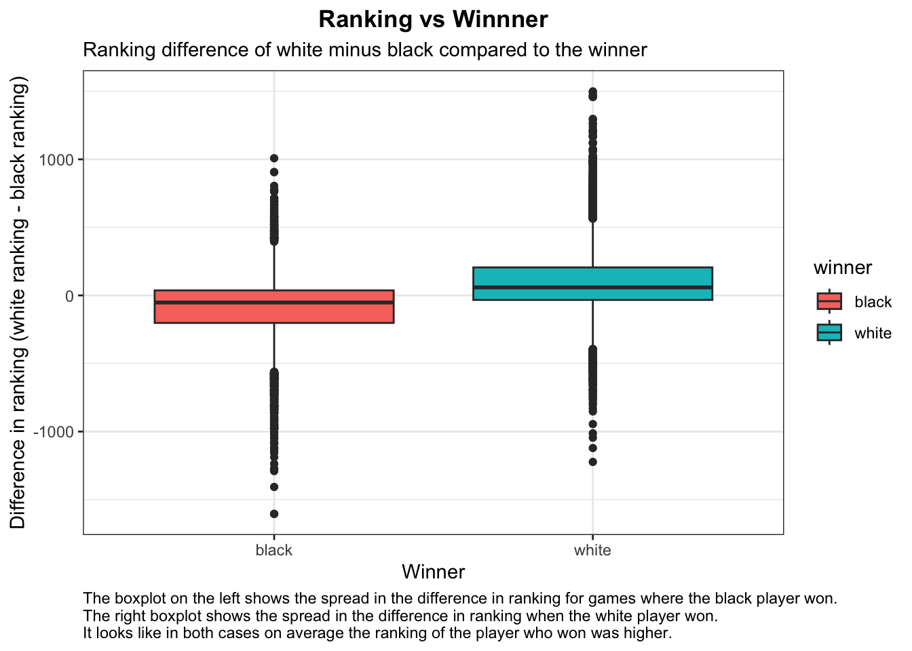
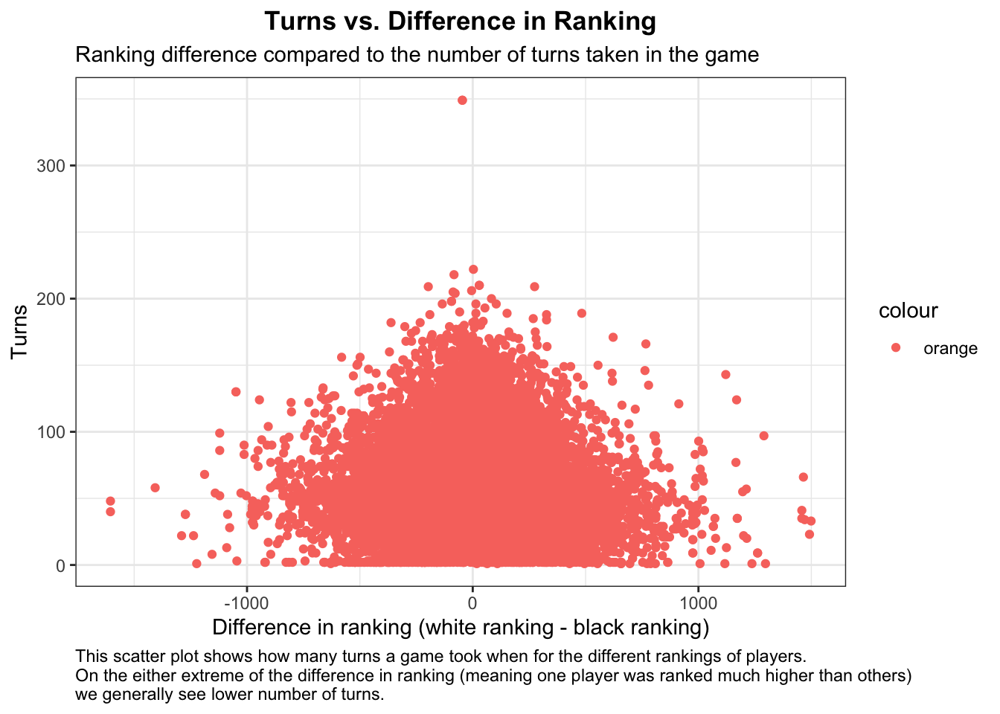
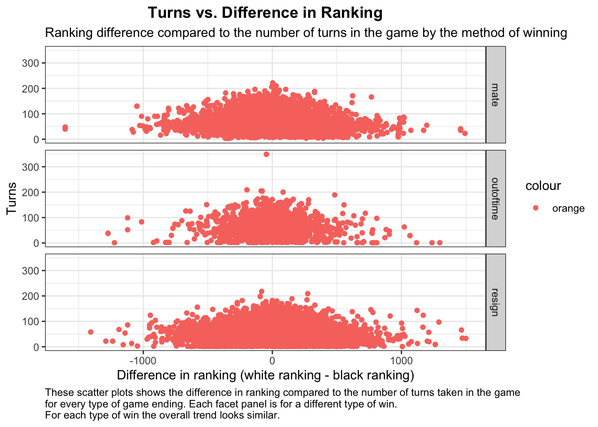
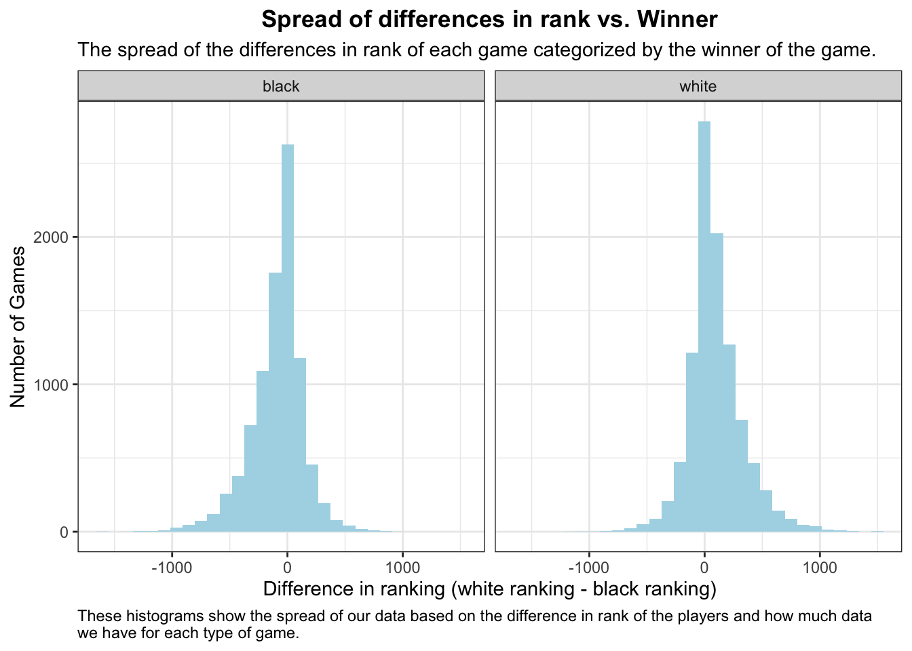

We want to examine how well the ranking of a chess player can predict the results of a chess game.
Intended Audience:
This analysis could be used by current chess players to see how much their difference in ranking from another player may predict their ability to win against them. It could also be used by the website to determine if the way that they are ranking the players is a good system.
Data description:
This data comes from over 20,000 games of chess played on the site Lichess.org and describes the ranking of each player, how the game went and the winner of the game. (MITCHELL J n.d.)
We first want to load the data from the github repository. I then clean the data by dropping all NA values and selecting only the variables that I care about for this analysis. For the purposes of this analysis I only want to look at games that had a clear winner and did not have a draw, so I filtered the data based on games that did not end in a draw. Finally, I made a new column that is the difference between the white player ranking and the black player ranking because I am interested in how well this difference can describe how the game is played and the outcome.
library(dplyr)library(tidyr)library(ggplot2)# read the data from Gitchess <- readr::read_csv('https://raw.githubusercontent.com/rfordatascience/tidytuesday/master/data/2024/2024-10-01/chess.csv')# look at the datanames(chess)
# drop any na rows in the dataframechess <-drop_na(chess)# select a couple continuous variables to look atvars <-c("turns", "winner" , "white_rating", "black_rating","time_increment", "victory_status")chess<- chess %>%select(vars)# filter the data to only games with a winner, no drawschess <- chess %>%filter(chess$winner !="draw")# make a column that shows the difference between the white and black rankingchess <- chess %>%mutate(dif_rank = white_rating-black_rating )# rename to make more clearchess <-rename(chess, time = time_increment)
Plotting
In this section I create multiple plots to examine the data. I am interested in how the rankings of the players affects the outcome. Each of the following plots shows a different aspect of how the rankings of the players relate to other variables measured about the games.
Pay Attention
The difference in ranking variable used in the next few plots was calculated by subtracting the black player ranking from the white player ranking. This means that larger values of this variable mean that the white player has a much higher ranking, while negative values mean that the black player has a higher ranking. Values around 0 mean that the players are closer in ranking.
# set the theme for ggplottheme_set(theme_bw())# make a box plot that compares the difference in ranking to the winnerp <-ggplot(chess, aes(winner, dif_rank, fill=winner))p +geom_boxplot()+theme(plot.title =element_text(face ="bold", hjust =0.5), plot.caption =element_text(hjust =0)) +ggtitle("Ranking vs Winnner", subtitle="Ranking difference of white minus black compared to the winner") +labs(y ="Difference in ranking (white ranking - black ranking)", x ="Winner", caption="The boxplot on the left shows the spread in the difference in ranking for games where the black player won. \nThe right boxplot shows the spread in the difference in ranking when the white player won. \nIt looks like in both cases on average the ranking of the player who won was higher.")

# make a scatter plot to compare the difference in rating to the number of moves and the type of wine <-ggplot(chess, aes(dif_rank, turns, color='orange'))e +geom_point() +theme(plot.title =element_text(face ="bold", hjust =0.5), plot.caption =element_text(hjust =0))+ggtitle("Turns vs. Difference in Ranking", subtitle="Ranking difference compared to the number of turns taken in the game") +labs(x ="Difference in ranking (white ranking - black ranking)", y ="Turns", caption="This scatter plot shows how many turns a game took when for the different rankings of players. \nOn the either extreme of the difference in ranking (meaning one player was ranked much higher than others) \nwe generally see lower number of turns.")

f <- e +geom_point() +theme(plot.title =element_text(face ="bold", hjust =0.5), plot.caption =element_text(hjust =0)) +ggtitle("Turns vs. Difference in Ranking", subtitle="Ranking difference compared to the number of turns in the game by the method of winning") +labs(x ="Difference in ranking (white ranking - black ranking)", y ="Turns", caption="These scatter plots shows the difference in ranking compared to the number of turns taken in the game \nfor every type of game ending. Each facet panel is for a different type of win. \nFor each type of win the overall trend looks similar.")# Use vars() to supply variables from the dataset:f +facet_grid(rows =vars(victory_status)) +theme(plot.title =element_text(face ="bold", hjust =0.5))

g <-ggplot(chess, aes(dif_rank))n <- g+geom_histogram(fill ="lightblue")n +facet_wrap(vars(winner))+theme(plot.title =element_text(face ="bold", hjust =0.5), plot.caption =element_text(hjust =0)) +ggtitle("Spread of differences in rank vs. Winner", subtitle="The spread of the differences in rank of each game categorized by the winner of the game.") +labs(x ="Difference in ranking (white ranking - black ranking)", y ="Number of Games", caption="These histograms show the spread of our data based on the difference in rank of the players and how much data \nwe have for each type of game.")

Pay Attention
The histograms that show us the spread of the data in difference in rank tell us to be careful when examining the scatter plot that shows difference in ranking compared to turns because we just have so much more data on games where the players have a similar ranking so it is hard to tell just based on the scatter plot if the number of turns actually decrease when the difference in rankings is larger.
Logisitic Regression
We now want to fit a logistic regression model to the data to see if the difference in ranking variable has some significance in predicting the winner of the game.
# make the winner a dummy variable 0,1chess$winner_dummy <-ifelse(chess$winner =="white", 1, 0)# fit a logistic regression model to the data to predict winner based on difference in rankingglm.fit <-glm(winner_dummy ~ dif_rank, data = chess, family ="binomial")summary(glm.fit)
Call:
glm(formula = winner_dummy ~ dif_rank, family = "binomial", data = chess)
Coefficients:
Estimate Std. Error z value Pr(>|z|)
(Intercept) 8.227e-02 1.563e-02 5.264 1.41e-07 ***
dif_rank 3.871e-03 8.407e-05 46.041 < 2e-16 ***
---
Signif. codes: 0 '***' 0.001 '**' 0.01 '*' 0.05 '.' 0.1 ' ' 1
(Dispersion parameter for binomial family taken to be 1)
Null deviance: 26447 on 19107 degrees of freedom
Residual deviance: 23486 on 19106 degrees of freedom
AIC: 23490
Number of Fisher Scoring iterations: 4
This p-value of 2e-16 indicates that we can reject the null hypothesis that the difference in rank does not have any impact on the winner.
# fit a linear regression to predict turns by difference in rankinglm.fit <-lm(turns ~ dif_rank +I(dif_rank^2), data=chess)summary(lm.fit)
Call:
lm(formula = turns ~ dif_rank + I(dif_rank^2), data = chess)
Residuals:
Min 1Q Median 3Q Max
-59.634 -22.537 -4.702 17.269 288.167
Coefficients:
Estimate Std. Error t value Pr(>|t|)
(Intercept) 6.071e+01 2.548e-01 238.308 < 2e-16 ***
dif_rank -3.781e-03 9.287e-04 -4.072 4.69e-05 ***
I(dif_rank^2) -2.373e-05 1.663e-06 -14.269 < 2e-16 ***
---
Signif. codes: 0 '***' 0.001 '**' 0.01 '*' 0.05 '.' 0.1 ' ' 1
Residual standard error: 32.12 on 19105 degrees of freedom
Multiple R-squared: 0.01178, Adjusted R-squared: 0.01168
F-statistic: 113.9 on 2 and 19105 DF, p-value: < 2.2e-16
This p-value of 2e-16 indicates that we can reject the null hypothesis that the difference in rank does not have any impact on the number of turns taken.
Summary
Our goal from this analysis was to understand how the ranking of players affects the outcome of a chess match. When examining the data we created a variable looking at the difference in ranking of the white player and black player. We created a boxplot that showed us that when the white player won, the average difference in ranking was higher for the white player, and when the black player won the difference in ranking was higher for the black player. We later fit a logistic regression to find the relationship between the difference in ranking of the two players and the winner. This logistic regression had a very small p-value which tells us that there is likely a correlation between the difference in ranking of the two players and the winner of the game. I next wanted to look at if this difference in ranking affected the amount of turns a game took because my hypothesis was that if the difference in ranking was higher, than the player with the higher ranking may win in fewer turns. To examine this I plotted a scatter plot to look at the difference in ranking compared to the number of turns taken, in this scatter plot it looked like when the absolute value of the difference in ranking was large, then the game took less turns, this lined up with my hypothesis. I then fit a linear regression model with a degree 2 polynomial on the difference in ranking because the shape of the scatter plot looked more quadratic to me. The resulting p-value was very low which indicates there is a strong correlation between the difference in ranking and the number of turns a game took. From this analysis I think we have seen that the rankings of chess players on this website can provide a good indicator of the result of the game and also how the game will go in terms of the number of turns it may take.
Packages used
DPLYR: I used the functions select, filter and rename from dplyr. TIDYR: I used the functions mutate and drop_na from tidyr. GGPLOT2: I used the functions geom_histogram(), geom_point() , geom_boxplot(), facet_wrap, and facet_grid from ggplot2.
References
“Data ScienceLearningCommunity.” n.d. DSLC. Accessed November 6, 2024.